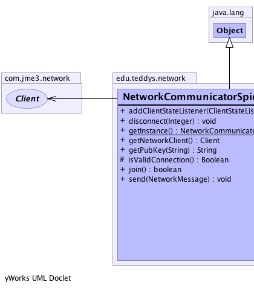

edu.teddys.network.NetworkCommunicatorSpidermonkeyClient
edu.teddys.network.NetworkCommunicatorSpidermonkeyClient
|
||||||||||
| PREV CLASS NEXT CLASS | FRAMES NO FRAMES | |||||||||
| SUMMARY: NESTED | FIELD | CONSTR | METHOD | DETAIL: FIELD | CONSTR | METHOD | |||||||||
java.lang.Object
public class NetworkCommunicatorSpidermonkeyClient
An implementation of the NetworkCommunicatorAPI.
NetworkCommunicatorAPI|  |
| Method Summary | |
|---|---|
void |
addClientStateListener(com.jme3.network.ClientStateListener listener)
Listenes for a client state change. |
void |
disconnect(java.lang.Integer clientID)
Destroy the active session for the specified user. |
static NetworkCommunicatorSpidermonkeyClient |
getInstance()
|
com.jme3.network.Client |
getNetworkClient()
|
java.lang.String |
getPubKey(java.lang.String pubKeyClient)
Get the public key from the server for encryption reasons. |
protected java.lang.Boolean |
isValidConnection()
Checks if networkClient is not null. |
boolean |
join()
Join a new client to the list of users. |
void |
send(NetworkMessage message)
Checks at first if there's a valid connection. |
| Methods inherited from class java.lang.Object |
|---|
clone, equals, finalize, getClass, hashCode, notify, notifyAll, toString, wait, wait, wait |
| Method Detail |
|---|
public static NetworkCommunicatorSpidermonkeyClient getInstance()
protected java.lang.Boolean isValidConnection()
public void addClientStateListener(com.jme3.network.ClientStateListener listener)
listener - The client listener.public java.lang.String getPubKey(java.lang.String pubKeyClient)
NetworkCommunicatorAPI
getPubKey in interface NetworkCommunicatorAPIpubKeyClient - The key from the client so that the public key
from the server can be encrypted.
public void send(NetworkMessage message)
send in interface NetworkCommunicatorAPImessage - The message to be transmitted.public boolean join()
NetworkCommunicatorAPI
join in interface NetworkCommunicatorAPIpublic void disconnect(java.lang.Integer clientID)
NetworkCommunicatorAPI
disconnect in interface NetworkCommunicatorAPIpublic com.jme3.network.Client getNetworkClient()
|
||||||||||
| PREV CLASS NEXT CLASS | FRAMES NO FRAMES | |||||||||
| SUMMARY: NESTED | FIELD | CONSTR | METHOD | DETAIL: FIELD | CONSTR | METHOD | |||||||||